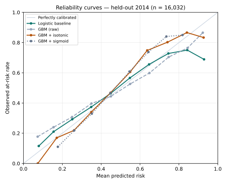

Models I’ve built, graded honestly — baselines first, fairness always, no number I can’t trace.
One system, three rooms: the IR Control Tower holds the data, The Gap Map holds the geography — this lab holds the models. Every model here ships with its baseline, its split, and the places it does worse, in public.
R² 0.745Outcomes Lab · held-out test 2021–2023
AUC 0.704Early Alert · temporal split 2013 → 2014
7.08M flightsBTS 2024 · verified row by row
The Models
Built, tested, graded
Each card states the question in plain English, names the validation split next to the headline metric, and links to the code and outputs the number came from.
01 · GRADIENT-BOOSTED REGRESSION · IPEDS
How much of a college’s graduation rate is already written in its profile?
IPEDS Outcomes Lab
A gradient-boosted regression predicting the graduation rate at 150% of normal time from institutional features — retention, admissions, finances, Pell share. Test R² 0.745, MAE 7.15 points on held-out 2021–2023 (trained 2015–2019, 2020 excluded), against simple baselines that score near zero. SHAP ranks full-time retention first — and the published fairness slices show where the model errs most: for-profit colleges and high-Pell campuses.
Two weeks into a course, who is quietly slipping away?
OULAD Early Alert
Logistic regression on the first 14 days of engagement only — clicks, active days, resources touched — predicting which students will withdraw or fail. AUC 0.704 on a true temporal split: trained on 2013 presentations, tested on held-out 2014 (n = 16,032). Flagging the top-risk 20% — the length of list an advising team can actually work — captures 31.3% of at-risk students, well above a zero-activity rule.
Same students, same first two weeks — can a stronger model spot at-risk students better, and can we trust the percentage it prints?
Same Students, Stronger Model
I took the early-alert model above back to the same students and asked a fair question: same first-14-days data, same train-on-2013, test-on-2014 split — would a stronger model do better? I swapped the logistic regression for gradient boosting, then calibrated its scores so a “70% risk” flag could be trusted to mean about 70%. Flagging the top-risk 20% captures 31.9% of at-risk students with the calibrated model vs 31.3% for the logistic baseline (held-out 2014, n = 16,032) — and calibration did its real job: isotonic brought the scores closest to meaning what they say.

Reliability curves, held-out 2014 test set: how close each model’s stated risk sits to what actually happened. The diagonal is a model whose percentages mean what they say.
The honest part: on AUC the baseline still wins, 0.704 vs 0.701, and it stays best on Brier score. The headline uses the advisor-capacity metric because that is the number an advising team would actually spend. Lesson kept: the signal lives in the features, not the algorithm.
Five habits, applied to every model on this page before any number is published. This is the part of the portfolio I would defend first.
01
Temporal splits
Train on the past, test on the future. A model graded on its own years is a story, not a result.
02
Baselines before models
Every model is reported next to the simple answer — a median, a sector mean, a zero-activity rule. Beating nothing proves nothing.
03
Fairness slices
Error broken out by who the students are — sector, Pell share, demographics. Where the model is worse, the page says so.
04
Calibration
A risk score is a promise. Reliability curves check whether “70% risk” actually happens about 70% of the time.
05
Reproducibility
Saved outputs, verification scripts, reruns that reproduce the same numbers. If I can’t re-run it, I don’t publish it.
In the Workshop
On the bench right now
NOV 2, 2026
Project 1 shipped: Same Students, Stronger Model
Gradient-boosted classification and probability calibration are off the “not yet” list as of today — the calibrated model, its reliability curves, and the result it honestly lost on AUC are all in the card above.
Next: Project 2 — “Next Year’s Number.” Rolling-origin backtesting of next-year graduation-rate forecasts on the IPEDS panel (2015–2023): last-value naive and institution median vs a lag-feature model, scored across several forecast origins. Where the ML model loses to naive, that gets reported too — that’s the write-up.
Not Yet
What I can’t do — yet
Most portfolios hide this list. Mine is on the page, and it only shrinks one way: when a shipped project proves the skill. Gradient-boosted classification and probability calibration sat here until Nov 2, 2026.
✗
Causal inference
Difference-in-differences, matching, uplift — my models so far describe and predict; they don’t claim a policy caused anything. Project 5 on the ladder, placed late on purpose, after the evaluation habits are solid.
✗
Deep learning
No neural networks yet, anywhere in the portfolio. The classical toolkit is still earning its keep.
✗
NLP beyond TF-IDF
My text work stops at TF-IDF and cosine similarity over genre tags. Embeddings, text classification, and topic models are unbuilt.
✗
Model deployment as a live service
No scoring endpoint, no drift monitoring, no MLOps. The capstone (Project 6) turns the Project 1 model into an interactive demo — with a written note on how it could go wrong in production.
ONE SYSTEM · THREE ROOMSThe IR Control Tower is the data, The Gap Map is the geography, the Data Science Lab is the models. Visit the other rooms: IR Control Tower · The Gap Map↗
All datasets on this page are public: IPEDS (NCES, U.S. Department of Education), OULAD (The Open University, CC BY 4.0), and BTS airline on-time data. UNC Wilmington appears only as my employer in my job title — never as a data subject.